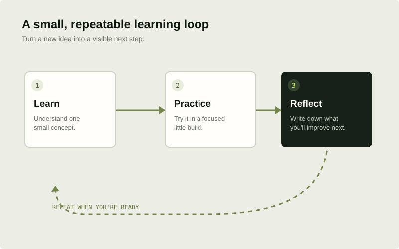

Foundations in focus
Separate HTML, CSS, and JavaScript pages cover the role of each technology, key beginner topics, accessible practices, and a small idea to try.
A STUDENT-BUILT LEARNING PROJECT Explore the project library
A NOTE ABOUT THE PROJECT
Web Foundry began as a classroom front-end exercise. This version reorganizes that starting point as a multi-page learning resource: clear guides, original visual explanations, and small project briefs that invite you to practice.

THE IDEA BEHIND THE SITE
A guide is most useful when an idea leads to action. The site gives each topic a focused page, pairs explanations with original diagrams, and connects foundational concepts to project briefs.
See how the learning path worksWHAT'S INCLUDED
The purpose is to show a careful front-end implementation and offer a starting point for further learning—not to pretend this is a full course platform.
Separate HTML, CSS, and JavaScript pages cover the role of each technology, key beginner topics, accessible practices, and a small idea to try.
Local SVG illustrations explain document structure, the box model, DOM interaction, project workflows, and project design references. Captions describe what each image is intended to show.
Each project outline includes a goal, a suggested scope, skills to practice, and a note about the visual reference. The briefs are starting points, not finished products to claim as your own work.
The pages use HTML, CSS, and a small amount of browser JavaScript. There is no framework, build step, account system, lesson backend, or package installation.
MAKE THIS PROJECT YOUR OWN
Use this as a base, not a substitute for your own thinking. Change the content, design a page of your own, and explain the decisions you made in your portfolio.